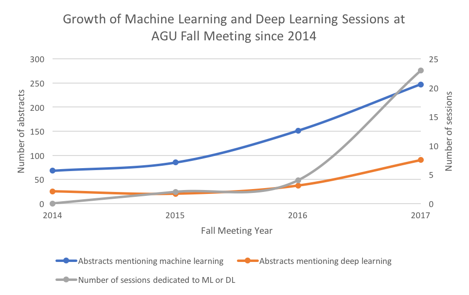

Blog
Deep Learning at the American Geophysical Union (AGU) Fall Meeting
21 December 2017
The American Geophysical Union (AGU) Fall Meeting is the largest gathering of Earth, planetary, and ocean scientists each year. Last week, more than 23,000 researchers gathered in New Orleans to present their latest work (21,896 abstracts were submitted).Of these 21,896 abstracts, 90 specifically mentioned deep learning and 247 mentioned machine learning, distributed across 23 total sessions dedicated to machine learning. Since each session typically lasts 1/3 of the day, this means there were enough conference sessions dedicated to machine learning to spend the entire meeting seeing ML presentations. As a researcher at the intersection of deep learning and geoscience/remote sensing, this was beyond exciting. This is nearly twice as many as in 2016, when there were 37 abstracts that mentioned deep learning, 151 that mentioned machine learning, and only 4 sessions dedicated to machine learning or deep learning.
Let’s look at this growth since 2014:

What’s especially interesting here is how fast the number of sessions dedicated to machine learning is growing, as well as the increase in abstracts presented. It’s also interesting that at machine learning conferences, deep learning rather than traditional machine learning is becoming more and more the dominant topic, but the majority of ML-related abstracts at AGU still do not feature deep learning. Over the week at AGU 2017, I attended as many oral and poster sessions as I possibly could, prioritizing those dominated by deep learning. I’ll summarize my findings here.
Highlights from conference proceedings
The vast majority of abstracts could be categorized in one of two ways:- Object classification of remotely sensed data (e.g. a seismogram, satellite image, or spectrum) either to create a map of some feature over a geographic area (e.g. trees or other land cover categories), or to detect a certain phenomenon (e.g. atmospheric river)
- Replacement of a physics-based process, e.g. weather forecasting, with a model-based process (specifically an RNN/LSTM)
- MyShake (Kong et al.): Android users download an app that constantly monitors activity through accelerometers etc. and distinguishes regular human activity (e.g. walking, jumping, exercise) from seismic activity using a lightweight neural network; if something that looks seismic is detected, the app sends the full movement to a server to be analyzed by a more robust convolutional network to determine if it’s actually an earthquake.
- Deep learning for extreme weather detection (Prabhat et al.): Showed success in using CNN to detect many extreme weather events e.g. tropical cyclones, atmospheric rivers, and weather fronts, but also used auto encoder for semi-supervised prediction of (1) bounding box location and size of the event, (2) class associated with the bounding box, and (3) the confidence of the bounding box. They also presented a new dataset, ExtremeWeather, to encourage more machine learning research in extreme weather.
- NeMO-Net – The Neural Multi-Modal Observation and Training Network for Global Coral Reef Assessment (Li et al.): Coral populations are dying (bleaching) at rapid rates all over the world, which is a major problem for ocean ecosystem health. We need to understand the scope of this problem in order to create solutions for it. Researchers at NASA Ames developed a new camera called FluidCam for sub-cm imaging of coral reefs without surface wave effects that typically distort coral reefs in satellite images and collecting data from their UAS platform. They train an autoencoder on this data to produce segmentation maps that ocean scientists use to label different classes of coral populations. In the future, they are looking to incorporate other lower-resolution (than FluidCam) datasets from satellites like Landsat, for more data and global coverage for their mapping, perhaps using GANs as a way to generate higher resolution images.
- Modeling urbanization patterns at a global scale with generative adversarial networks (Albert et al.): This work was presented with the title “The cities that never were (but could have been)”. It is difficult to make predictions on urbanization due to a lack of consistent data in developing regions (where it’s most important), so they set out to learn spatial models (i.e. urban maps) from global data (e.g. GPD, poverty rates, etc) using a generative adversarial network (GAN). They also imposed constraints on the realistic-ness of cities with a specialized loss function incorporating standard spatial statistics used by urban analysis experts.
- Combining deep learning and satellite data to inform sustainable development (Lobell et al.): We would like to create poverty maps from satellite images, but we don’t have the right training data to do this directly with machine learning, i.e. we don’t have an abundance of poverty maps that we can use to train a model to produce from satellite images. They set up a “proxy network” to learn latent features that might be indicative of poverty in which they trained a CNN with input being daytime satellite images from Google Maps and output being maps of nighttime light intensities. Once the model was trained, they extracted the final layer of activations and used these as features for a regression model for predicting poverty. When looking at the kinds of features the model was learning, they found that it learned features such as the frequency of backyard swimming pools, which we would also associate with the income of an area.
- #AltPlanets: Exploring the Exoplanet Catalogue with Neural Networks (Laneuville et al.): Thanks to Kepler, we’ve accumulated a dataset for exoplanets of 3500-4500 examples with ~80 features each. It is not clear how the features we know for individual exoplanets, e.g. planet mass, radius, orbital path, stellar properties and neighboring planets, influence one another, and our interpretation of how these features are related might be further influenced by how scientists tend to cluster them, e.g. “hot Jupiters” or “water worlds”. The authors trained a Boltzmann machine to generate the probability distribution of missing values in an exoplanet observation given the rest of a planet’s properties for scientists to utilize in their understanding of relationships between features of exoplanets, especially in the event of new observations where we don’t have a complete picture. They also trained an auto encoder to reproduce the features from exoplanet catalogs, then cluster on the bottleneck layer activations in order to present an “objective clustering” for exoplanet categories.
Going where no (Earth, climate, planetary, ocean) scientists have gone before…
I heard from many presenters that they were “trying out” neural networks and while they were getting promising initial results, they were having some difficulty parsing the vast amounts of literature published in the last 5 years in order to find what the “best practices” for training their models were. Since I too have sometimes felt like I’m drinking from the firehose of an ever-growing bag of tricks, I figured I would assemble what I see as the standards here:- Use dropout:As the original paper says, dropout is a really simple and efficient way to prevent neural networks from overfitting. It does this by “dropping” (setting to 0) X% of the neurons at the layer to which it is applied. The original paper uses a “keep probability” (probability a neuron will be kept rather than dropped) of 0.5 for hidden units and 0.8 for input units. You might be thinking, “You want me to throw away half my data?! What a waste!”. But remember that you are going through multiple epochs of your data and doing this will force your neurons not to depend on each other and develop independent features that are useful for inference. You can think of it as producing an average of infinitely many neural networks, like a random forest of neural networks for free. (Of course, it will increase training time, but that’s a small price to pay.)
- Scale your input data for your activation function: depending on which activation function you are using, there is a range of values (typically close to [-1,1]) outside of which the derivative of the activation function at that input is 0 or close to it. Since the network learns through backpropagation, and in backprop we multiply the error by the derivative of the activation function at the input point, you’ll have a derivative of ~0 and thus it will be very difficult to do any significant learning. If you’re working with TensorFlow, this is very easy to do with tf.per_image_standardization() which scales examples to have zero mean and unit norm (subtracts the mean and divides by the standard deviation).
- Tune your hyperparameters: if you’re using TensorFlow, I like to define all my hyperparameters (e.g. batch size, layer sizes, learning rate, etc) using tf.app.flags or argparse or similar so that you can pass the values of the hyperparameters as a command line argument. This makes it much easier when running a random, grid, or other search to run your model many times with different hyperparameter values.
- If using TensorFlow, annotate like crazy with TensorBoard! Visualizing what your network is doing in TensorBoard is the most helpful way IMHO to understand if your network is really learning useful representations and get insight into what might be going wrong.
Earth vs. planetary science
Out of the 23 sessions dedicated to deep learning or machine learning, only one was in the planetary science track (co-chaired by yours truly)—all others were in Earth-related tracks. Why such a disparity, you ask?! In my opinion, this comes down to 1) data accessibility and 1) funding opportunities.Due to the threat of climate change, there has been a major emphasis in recent years in the Earth science community on making data accessible and standardized for researchers. You can easily access tons of Earth image data on Amazon Web Services or Google Earth Engine. The closest thing planetary science has is the Planetary Data System, which is a wonderful treasure trove of planetary data from all of NASA’s planetary science missions, but it is not nearly as accessible or integrated with common data science workflows as the tools for Earth data.
Many of the presenters of Earth-related machine learning work cited the NASA Earth Science Technology office as their funding source, and specifically the Advanced Information Systems Technology (AIST) Program, which awards $200,000-$2M to researchers developing data science and information technologies for Earth science data. As far as I know, the closest programs to this in planetary science are the Planetary Data Archiving, Restoration, and Tools (PDART), Mars Data Analysis Program (MDAP), and Lunar Data Analysis Program (LDAP), which are fantastic funding sources but seem to primarily focus on storage, access, and restoration of planetary data or using the data to test specific scientific hypotheses.
What's next?
Being a deep learning researcher in geoscience/remote sensing applications, I found this fall meeting extremely encouraging, productive, and energizing (thus here I am writing my first blog post about it). I am really looking forward to continuing my own research and continuing to grow the community of researchers in this area over the next year!Here is a recent review paper of deep learning in remote sensing. Additionally, the journal Remote Sensing will be publishing a special issue for deep learning in remote sensing (submissions due Nov 2018).
In case you’re interested in some holiday reading, here is my reading list from the conference sessions:
- MyShake: A smartphone seismic network for earthquake early warning and beyond
Q Kong, RM Allen, L Schreier, YW Kwon - Science advances, 2016 - ExtremeWeather: A large-scale climate dataset for semi-supervised detection, localization, and understanding of extreme weather events
E Racah, C Beckham, T Maharaj, S Ebrahimi Kahou, Prabhat, C Pal - NIPS 2017 - The cities that never were (but could have been)
Albert et al., pre-print coming to Arxiv soon - Poverty Prediction with Public Landsat 7 Satellite Imagery and Machine Learning
A Perez, C Yeh, G Azzari, M Burke, D Lobell, S Ermon - NIPS 2017 - Deep Gaussian Process for Crop Yield Prediction Based on Remote Sensing Data
J You, X Li, M Low, D Lobell, S Ermon - AAAI 2017 - Monitoring Ethiopian Wheat Fungus with Satellite Imagery and Deep Feature Learning
R Pryzant, S Ermon, D Lobell - CVPR EarthVision 2017 - #AltPlanets: Exploring the Exoplanet Catalogue with Neural Networks
Laneuville et al., paper upcoming - DeepSat - A Learning framework for Satellite Imagery
S Basu, S Ganguly, S Mukhopadhyay, R DiBiano, M Karki, R Nemani - ACM SIGSPATIAL 2015